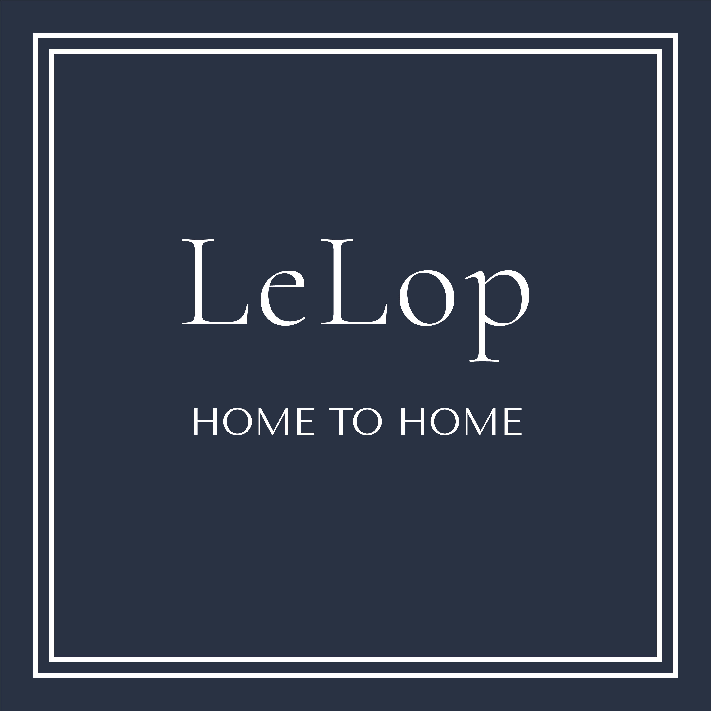
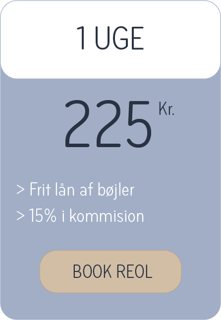
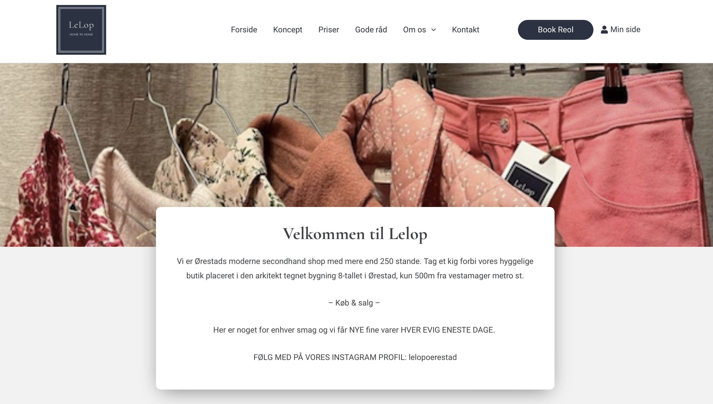
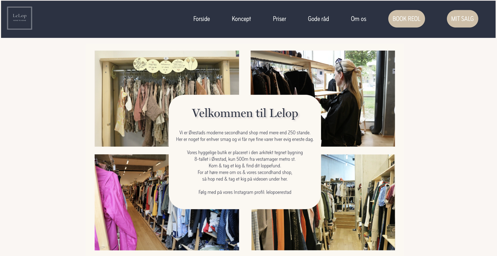

LELOP
I dette tema, grundlæggende web, var en af vores opgaver denne, som også var voresstudiestartsprøve. I denne opgave lærte vi om at arbejde ud fra et “mobile first”, for så derefter atkunne producere et responsivt design, så Denne opgave kunne vises responsivt på forskellige skærmstørrelser.


Jeg valgte at benytte mig af denne læring, for at så kunne arbejde ud fra udleveret wireframe og layoutdiagram. Ud fra wireframet og layoutdiagrammet, kunne jeg løse den givende opgave, da jeg kunne overføre den information som blev givet, til kodning, via css grid, mediaqueris og flex. Dermed kunne websitet opbygges med koloner og opdeling mellem de forskellige overskrifter og tilhørende tekster.
Denne løsning valgte jeg at bruge, da vi på dette tidspunkt havde fået disse kompetencer, men derudover arbejdede jeg også ud gestalt principperne, med især fokus på loven om lighed. Dette lagde jeg fokus på, fremfor loven om lukkethed eller nærhed, fordi jeg genre ville skabe en sammenhæng mellem de forskellige elementer, ved at give billeder en border radius, eller give flere tekstelementer farven hvid, for at skabe en lighed mellem dem, men også for at fremhæve de vigtige elementer for brugeren.
